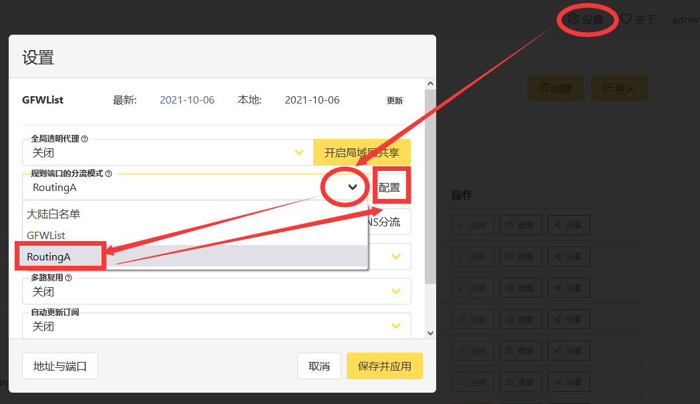
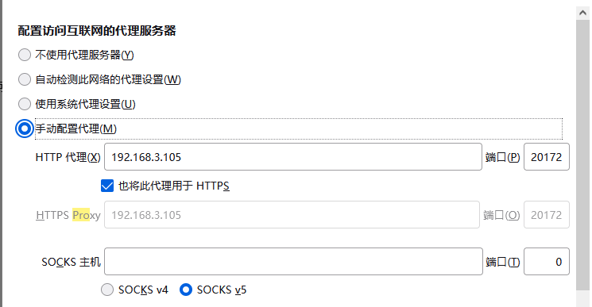

分流代理配置
Glider 十月 06, 2021前言
虽然学校内的环境很美好，但免不了需要外地进行访问的问题
比如北邮人pt站，只能教育网ipv6访问。
但学校内部没有适合放硬盘的地方，因此需要一个中间机器进行转发。
这主要涉及到俩个方面：
- 校外如何访问校内的设备（vpn）
- 校内校外的设备如何进行设置，以达到分流的目的
这篇文章主要记录关于第二个问题，博主的解决办法
正文
硬件条件：
- 校内一台树莓派（archlinux） 记为A
- 校外一台linux系统的服务器（archlinux） 记为B
- 校外一台win10台式机 记为C
网络环境：
- A
- 能够正常访问北邮人等教育网专用网站
- 拥有ipv6与ipv4
- B和C
- 能够通过ip直接访问A（vpn已架设好）
- 只有ipv4
- BC处于同一局域网下
A的配置
全部通过docker进行，架设http代理，命令如下
docker run -d --name tinyproxy -p 8888:8888 -e "ALLOWED=0.0.0.0/0" ajoergensen/tinyproxy
B的配置
全部通过docker进行，使用v2raya进行分流代理，命令如下
docker run -d \
-p 2017:2017 \
-p 20170-20180:20170-20180 \
--restart=always \
--name v2raya \
-v /mnt/bignas/v2raya:/etc/v2raya \
-e V2RAYA_V2RAY_BIN=/etc/v2raya/xray \
mzz2017/v2raya
注意：原本的镜像没提供xray内核，需要先自行下载xray然后映射进去，同时给定环境变量，强制使用xray。 v2raya说明文档
v2raya web配置

进去之后配置，博主的配置如下，仅供参考
outbound:hust=http(address: 10.243.113.248, port: 8888)
default: proxy # 默认走代理
# pt站点
domain(domain: pt.keepfrds.com,domain: m-team.cc)->direct
domain(domain: hudbt.hust.edu.cn, domain: byr.pt)->hust
# 国内，本地
domain(geosite:cn)->direct
ip(geoip:private, geoip:cn)->direct
# 学术
domain(geosite:category-scholar-!cn, geosite:category-scholar-cn)->hust
这里的 10.243.113.248是A的vpn地址
这个分流规则非常强大，配置比较复杂，教程
C的配置
以火狐浏览器为例

192.168.3.105是B的局域网地址
结尾
设置完成之后，能够正常访问北邮人等网站，兼具fq等功能。
QA
vpn怎么搭建啊？
到网络中心去申请，校园网账号就行